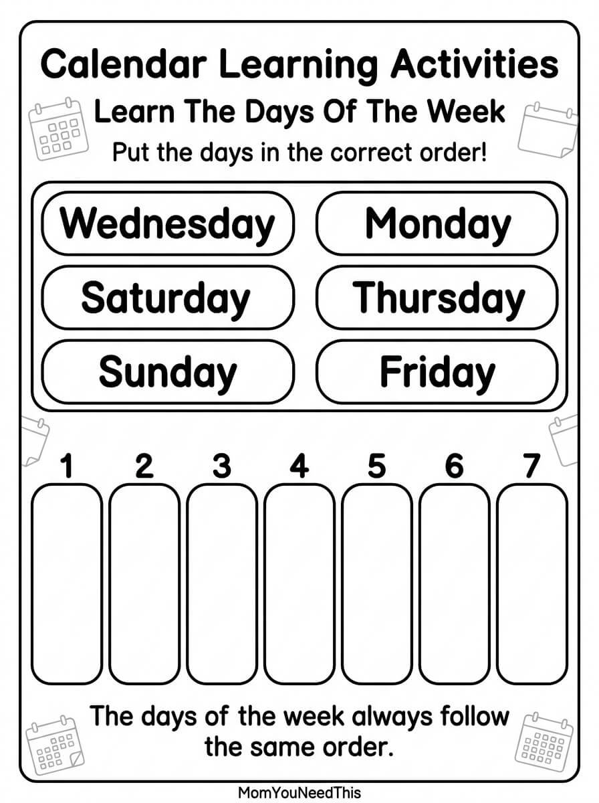

Days of the Week Activities Free Printable Days of the Week Activities For Kids
Help toddlers and preschoolers learn the days of the week with these fun, kid-friendly printable activities. Practice recognizing, sequencing, and talking about the seven days while building early time and calendar skills.
🗓️ Learn The Days Of The Week
Use these activities to help your child learn the names of the days, put them in the correct order, and begin understanding how the days fit together in a week.
Free Days of the Week Activities


How To Use These Activities
Practice saying the seven days together and ask your child to put them in order. You can also talk about what happens on different days, such as school days, weekends, or special family activities. Use the printable for preschool lessons, calendar time, or quiet learning.
Why Learn The Days Of The Week?
Learning the days of the week helps children develop an early understanding of time, sequence, routines, and calendars. Repeated practice also helps children become familiar with the order and names of the seven days.
🎁 Keep Exploring Free Learning Activities
Discover more printable activities, toddler resources, and learning ideas created for busy parents.
🎁 View All Free Resources🖨️ How to Use This Printable
Get started in minutes — everything here is free and made for busy parents.
- Download the printable. Tap the download button to save the free Days of the Week Activities file to your device.
- Print it out. Use any home printer and regular paper — cardstock works great for pages little hands will use again and again.
- Learn together. Sit with your child, follow the activity, and keep it playful. Short sessions work best.
- Explore more. Check the free printables linked below for your next activity.
❓ Days of the Week Activities FAQs
Is the Days of the Week Activities printable free?
Yes — every printable on MomYouNeedThis is 100% free to download and print. No signup, no payment, just tap the download button.
How do I download and print the activity?
Tap the download button on this page to save the file, then print it on regular paper with any home printer. Cardstock makes extra-durable pages for little hands.
What does my child learn from this activity?
This activity builds fine motor skills while teaching the days of the week in order and growing calendar vocabulary.
🔗 More Free Printables You’ll Love
Pair this printable with more free learning activities from the MomYouNeedThis library.
- 🔤 Alphabet Coloring PagesFree A to Z alphabet coloring printables for toddlers and preschoolers.
- 🎏 Free 5-Minute Toddler ActivitiesFree 5-minute toddler activities printable for toddlers and preschoolers.
- 🎏 Free Calendar Learning ActivitiesFree calendar learning activities printable for toddlers and preschoolers.
- 🎏 Free How Plants GrowFree how plants grow printable for toddlers and preschoolers.